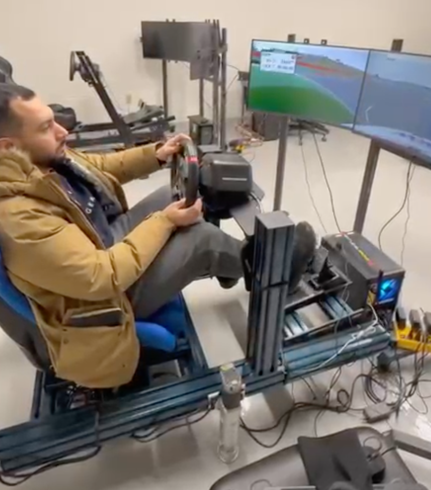
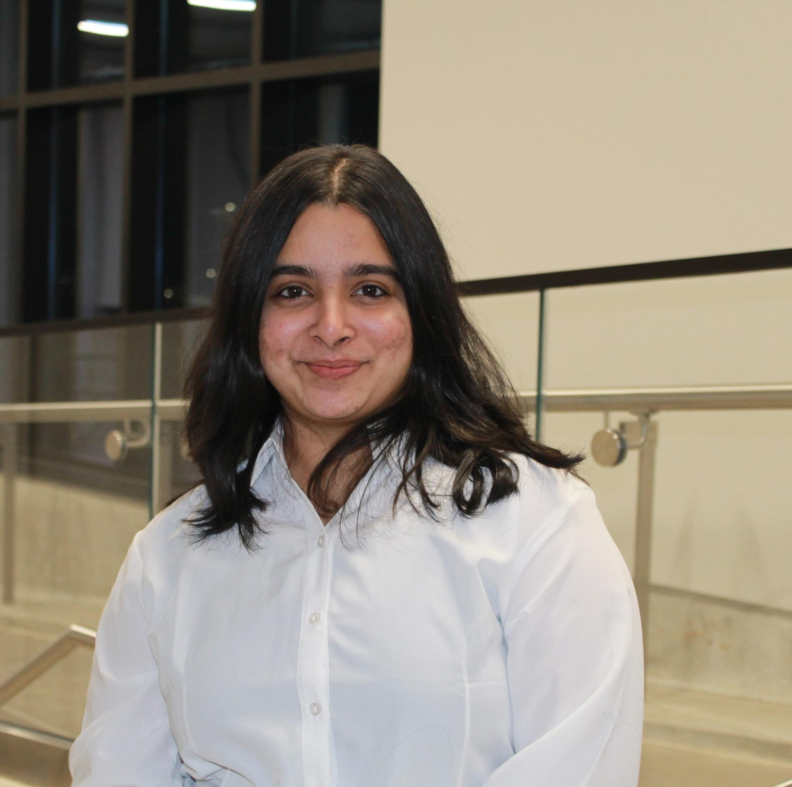
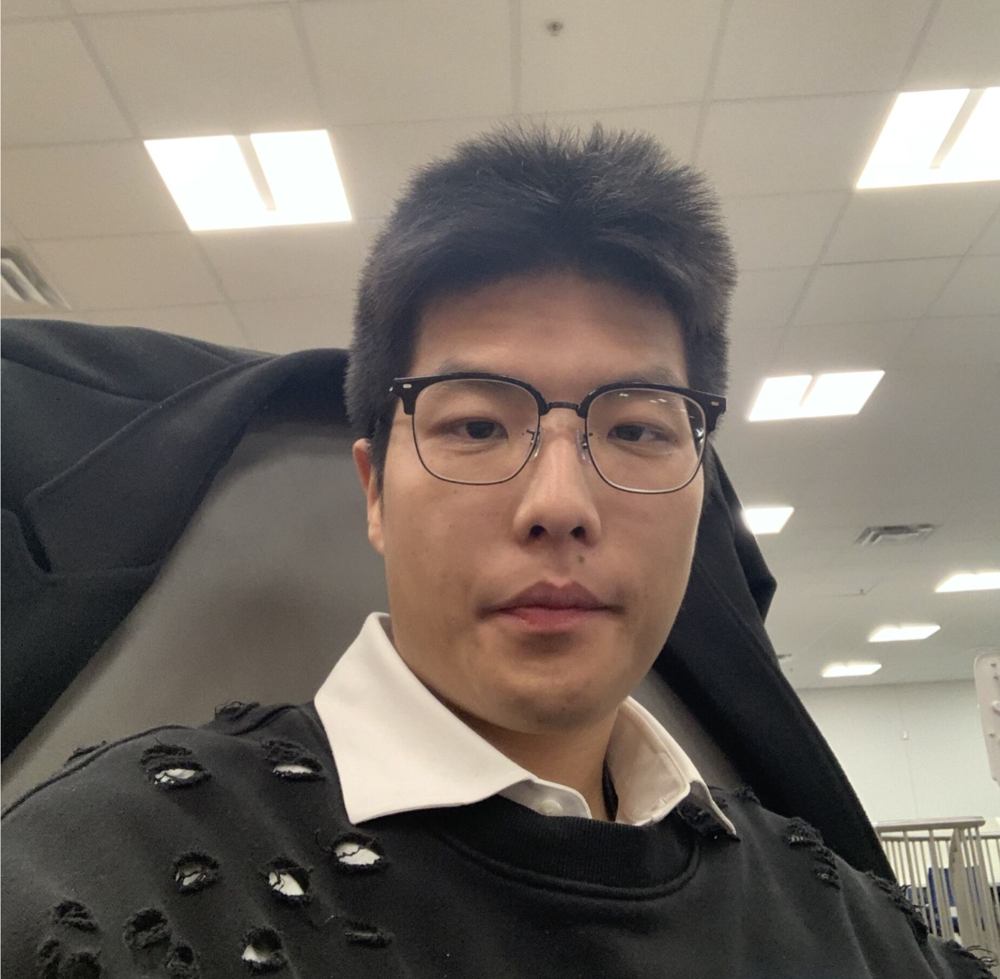

Group
Humans & Autonomous Agents Lab · Western University

Atrisha Sarkar
Principal Investigator · Assistant Professor, ECE
Assistant Professor in the Department of Electrical and Computer Engineering at Western University. Faculty Affiliate at the Schwartz Reisman Institute for Technology and Society, Faculty Member at the Rotman Institute of Philosophy, and member of the Computational Institutional Science Lab. Full bio →
Graduate Students
Haoran (William) Wang
PhD Student
Jan 2026 – Present
Working on the intersection of multiagent systems and computational institutional sciences.

Nour ElGharably
PhD Student
Sept 2025 – Present
Human-factors approaches to cybersecurity of level-2 automated driving systems. (co-supervised with Prof. Mohamed Zaki)
Binchi Zhang
MESc Student
Sept 2025 – Present
Working on strategic reasoning in LLMs. (co-supervised with Prof. Luiz Capretz)
Ajmain Khan
MEng Project Student
Jan 2026 – Present
Working on validation methods for agentic AI software systems.
Zirui Liu
MEng Project Student
Jan 2026 – Present
Symbolic information extraction from unstructured data for computational social science.
Undergraduate Students
Jennifer Shi
May 2025 – Present
Creating a simulation framework using empirical game theory and generative AI agents for socio-ecological systems. B.Eng. Software Engineering, Western University.
Natalie Oulikhanian
Aug 2025 – Present
Visiting undergraduate student from University of Toronto, working on deliberation and AI alignment.

Vishwa Dipakkumar Prajapati
Aug 2025 – Present
Undergraduate student interested in human-robot interaction.
Past Students
Jonathan Bowen
Research Assistant
May – Aug 2025
Foundations of trust between humans and generative AI agents. PhD student, Dept. of Philosophy, Western University.

Larry Long
MESc Student
Sept 2025 – Mar 2026
Worked on driving behaviour analysis for autonomous vehicles.